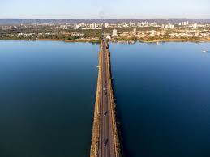

Tocantins é um estado da região Norte do Brasil, com capital em Palmas. Foi criado em 1988 e é um dos estados mais novos do país. Possui vegetação de cerrado, clima quente e economia baseada na agropecuária, agricultura e energia hidrelétrica. É uma importante área de transição entre o Norte e o Centro-Oeste.
